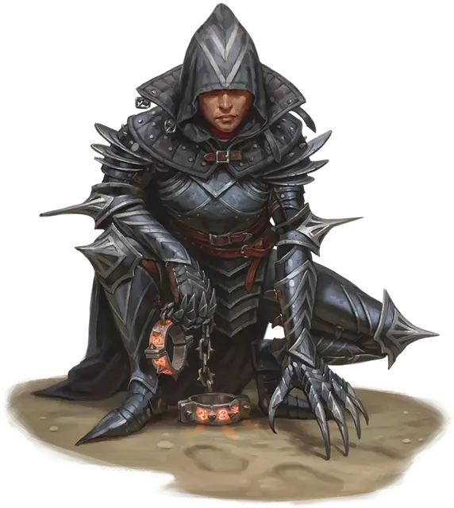

Ищейка Убийц милосердия
Mercykiller Bloodhound
Маленький или Средний Гуманоид

Класс Доспеха 18 (латы)
Хиты 120 (16к8 + 48)
Скорость 40 футов
| мод | спас | ||
|---|---|---|---|
| СИЛ | 17 | +3 | +3 |
| ЛОВ | 12 | +1 | +1 |
| ТЕЛ | 16 | +3 | +3 |
| мод | спас | ||
|---|---|---|---|
| ИНТ | 12 | +1 | +1 |
| МДР | 15 | +2 | +2 |
| ХАР | 8 | −1 | −1 |
Навыки Восприятие +8, Выживание +8
Чувства пассивное Восприятие 18
Языки Общий плюс один язык
Опасность 7 (2900 опыта)
Бонус мастерства +3
Особенности
Ощущение портала. Ищейка может ощущать присутствие порталов в пределах 30 футов, включая неактивные порталы, и инстинктивно знает место назначения каждого из них.
Действия
Мультиатака. Ищейка совершает три атаки Перчаткой с когтями.
Перчатка с когтями. . Рукопашная атака оружием: +6 к попаданию, досягаемость 5 футов, одна цель. Попадание: 7 (1к8 + 3) рубящего урона плюс 10 (3к6) урона некротической энергией.
Бонусные действия
Метка преследуемого (3/день). Ищейка пытается наложить магическую метку на существо, которую она может видеть в пределах 30 футов. Цель должна преуспеть в спасброске Харизмы Сл 13, иначе она будет проклята на 24 часа. Существо, потерявшее часть своих хитов, с помехой совершает данный спасбросок. Будучи проклятым таким образом, ищейка может чувствовать направление и расстояние до цели, пока они находятся на одном плане существования. Если цель находится в другом плане, ищейка знает, на каком плане находится цель.
Описание
Облаченные в черные доспехи и шипастые рукавицы, заканчивающиеся стальными когтями, ищейки выслеживают виновных в серьезных преступлениях в Сигиле. Эти следопыты преследуют свои цели по всем планам.